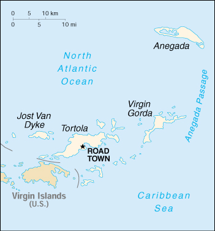

![[Country Flag of British Virgin Islands]](../flags/vi-lgflag.jpg)
| British Virgin Islands |
|
         |  | |
| Introduction |
Background: First settled by the Dutch in 1648, the islands were soon after (1672) annexed by the English. The economy is closely tied to the larger and more populous US Virgin Islands to the west; the US dollar is the legal currency.
| Geography |
Location: Caribbean, between the Caribbean Sea and the North Atlantic Ocean, east of Puerto Rico
Geographic coordinates: 18 30 N, 64 30 W
Map references: Central America and the Caribbean
Area:
total:
150 sq km
land:
150 sq km
water:
0 sq km
note:
includes the island of Anegada
Area - comparative: about 0.9 times the size of Washington, DC
Land boundaries: 0 km
Coastline: 80 km
Maritime claims:
exclusive fishing zone:
200 nm
territorial sea:
3 nm
Climate: subtropical; humid; temperatures moderated by trade winds
Terrain: coral islands relatively flat; volcanic islands steep, hilly
Elevation extremes:
lowest point:
Caribbean Sea 0 m
highest point:
Mount Sage 521 m
Natural resources: NEGL
Land use:
arable land:
20%
permanent crops:
7%
permanent pastures:
33%
forests and woodland:
7%
other:
33% (1993 est.)
Irrigated land: NA sq km
Natural hazards: hurricanes and tropical storms (July to October)
Environment - current issues: limited natural fresh water resources (except for a few seasonal streams and springs on Tortola, most of the islands' water supply comes from wells and rainwater catchment)
Geography - note: strong ties to nearby US Virgin Islands and Puerto Rico
| People |
Population: 19,615 (July 2000 est.)
Age structure:
0-14 years:
20% (male 2,022; female 1,975)
15-64 years:
75% (male 7,517; female 7,102)
65 years and over:
5% (male 545; female 454) (2000 est.)
Population growth rate: 2.34% (2000 est.)
Birth rate: 15.86 births/1,000 population (2000 est.)
Death rate: 4.59 deaths/1,000 population (2000 est.)
Net migration rate: 12.08 migrant(s)/1,000 population (2000 est.)
Sex ratio:
at birth:
1.05 male(s)/female
under 15 years:
1.02 male(s)/female
15-64 years:
1.06 male(s)/female
65 years and over:
1.2 male(s)/female
total population:
1.06 male(s)/female (2000 est.)
Infant mortality rate: 21.05 deaths/1,000 live births (2000 est.)
Life expectancy at birth:
total population:
75.44 years
male:
74.57 years
female:
76.35 years (2000 est.)
Total fertility rate: 1.72 children born/woman (2000 est.)
Nationality:
noun:
British Virgin Islander(s)
adjective:
British Virgin Islander
Ethnic groups: black 90%, white, Asian
Religions: Protestant 86% (Methodist 45%, Anglican 21%, Church of God 7%, Seventh-Day Adventist 5%, Baptist 4%, Jehovah's Witnesses 2%, other 2%), Roman Catholic 6%, none 2%, other 6% (1981)
Languages: English (official)
Literacy:
definition:
age 15 and over can read and write
total population:
97.8% (1991 est.)
male:
NA%
female:
NA%
| Government |
Country name:
conventional long form:
none
conventional short form:
British Virgin Islands
abbreviation:
BVI
Data code: VI
Dependency status: overseas territory of the UK
Government type: NA
Capital: Road Town
Administrative divisions: none (overseas territory of the UK)
Independence: none (overseas territory of the UK)
National holiday: Territory Day, 1 July
Constitution: 1 June 1977
Legal system: English law
Suffrage: 18 years of age; universal
Executive branch:
chief of state:
Queen ELIZABETH II (since 6 February 1952), represented by Governor Francis J. SAVAGE (since NA)
head of government:
Chief Minister Ralph T. O'NEAL (since 15 May 1995; appointed after the death of former Chief Minister H. Lavity STOUTT)
cabinet:
Executive Council appointed by the governor from members of the Legislative Council
elections:
none; the monarch is hereditary; governor appointed by the monarch; chief minister appointed by the governor from among the members of the Legislative Council
Legislative branch:
unicameral Legislative Council (13 seats; members are elected by direct popular vote, one member from each of 9 electoral districts, four at-large members; members serve five-year terms)
elections:
last held 20 February 1995 (next to be held NA February 2000)
election results:
percent of vote by party - NA; seats by party - VIP 6, CCM 2, UP 2, independents 3
Judicial branch: Eastern Caribbean Supreme Court, consisting of the High Court of Justice and the Court of Appeal; (one judge of the Supreme Court is a resident of the islands and presides over the High Court); Magistrate's Court; Juvenile Court; Court of Summary Jurisdiction
Political parties and leaders: Concerned Citizens Movement or CCM [E. Walwyn BREWLEY]; Independent People's Movement or IPM [Omar HODGE and Allen O'NEAL]; United Party or UP [Conrad MADURO]; Virgin Islands Party or VIP [Ralph T. O'NEAL]
International organization participation: Caricom (associate), CDB, ECLAC (associate), Interpol (subbureau), IOC, OECS (associate), UNESCO (associate)
Diplomatic representation in the US: none (overseas territory of the UK)
Diplomatic representation from the US: none (overseas territory of the UK)
Flag description: blue, with the flag of the UK in the upper hoist-side quadrant and the Virgin Islander coat of arms centered in the outer half of the flag; the coat of arms depicts a woman flanked on either side by a vertical column of six oil lamps above a scroll bearing the Latin word VIGILATE (Be Watchful)
| Economy |
Economy - overview: The economy, one of the most prosperous in the Caribbean, is highly dependent on tourism, which generates an estimated 45% of the national income. An estimated 350,000 tourists, mainly from the US, visited the islands in 1997. In the mid-1980s, the government began offering offshore registration to companies wishing to incorporate in the islands, and incorporation fees now generate substantial revenues. An estimated 250,000 companies were on the offshore registry by yearend 1997. The adoption of a comprehensive insurance law in late 1994, which provides a blanket of confidentiality with regulated statutory gateways for investigation of criminal offenses, is expected to make the British Virgin Islands even more attractive to international business. Livestock raising is the most important agricultural activity; poor soils limit the islands' ability to meet domestic food requirements. Because of traditionally close links with the US Virgin Islands, the British Virgin Islands has used the dollar as its currency since 1959.
GDP: purchasing power parity - $287 million (1999 est.)
GDP - real growth rate: 6.8% (1999 est.)
GDP - per capita: purchasing power parity - $15,000 (1999 est.)
GDP - composition by sector:
agriculture:
1.8%
industry:
6.2%
services:
92% (1996 est.)
Population below poverty line: NA%
Household income or consumption by percentage share:
lowest 10%:
NA%
highest 10%:
NA%
Inflation rate (consumer prices): 5.3% (1998)
Labor force: 4,911 (1980)
Labor force - by occupation: agriculture NA%, industry NA%, services NA%
Unemployment rate: 3% (1995)
Budget:
revenues:
$121.5 million
expenditures:
$115.5 million, including capital expenditures of $NA (1997)
Industries: tourism, light industry, construction, rum, concrete block, offshore financial center
Industrial production growth rate: 4% (1985)
Electricity - production: 42 million kWh (1998)
Electricity - production by source:
fossil fuel:
100%
hydro:
0%
nuclear:
0%
other:
0% (1998)
Electricity - consumption: 39 million kWh (1998)
Electricity - exports: 0 kWh (1998)
Electricity - imports: 0 kWh (1998)
Agriculture - products: fruits, vegetables; livestock, poultry; fish
Exports: $6 million (1998)
Exports - commodities: rum, fresh fish, fruits, animals; gravel, sand
Exports - partners: Virgin Islands (US), Puerto Rico, US
Imports: $175 million (1998)
Imports - commodities: building materials, automobiles, foodstuffs, machinery
Imports - partners: Virgin Islands (US), Puerto Rico, US
Debt - external: $36.1 million (1997)
Economic aid - recipient: $2.6 million (1995)
Currency: 1 United States dollar (US$) = 100 cents
Exchange rates: US currency is used
Fiscal year: 1 April - 31 March
| Communications |
Telephones - main lines in use: 9,000 (1994)
Telephones - mobile cellular: NA
Telephone system:
worldwide telephone service
domestic:
NA
international:
submarine cable to Bermuda
Radio broadcast stations: AM 1, FM 4, shortwave 0 (1998)
Radios: 9,000 (1997)
Television broadcast stations: 1 (plus one cable company) (1997)
Televisions: 4,000 (1997)
Internet Service Providers (ISPs): 1 (1999)
| Transportation |
Railways: 0 km
Highways:
total:
113 km (1995 est.)
paved:
NA km
unpaved:
NA km
Ports and harbors: Road Town
Merchant marine: none (1999 est.)
Airports: 3 (1999 est.)
Airports - with paved runways:
total:
2
914 to 1,523 m:
1
under 914 m:
1 (1999 est.)
Airports - with unpaved runways:
total:
1
914 to 1,523 m:
1 (1999 est.)
| Military |
Military - note: defense is the responsibility of the UK
| Transnational Issues |
Disputes - international: none